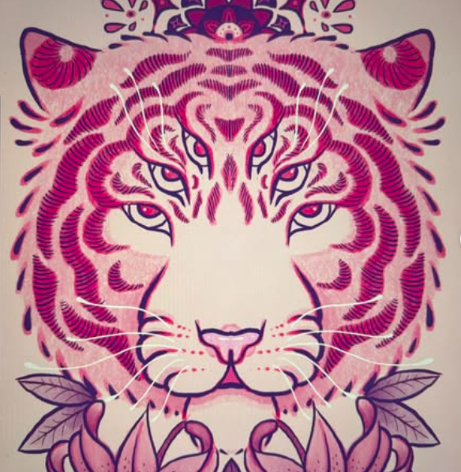
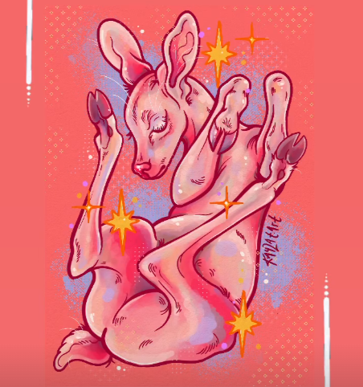
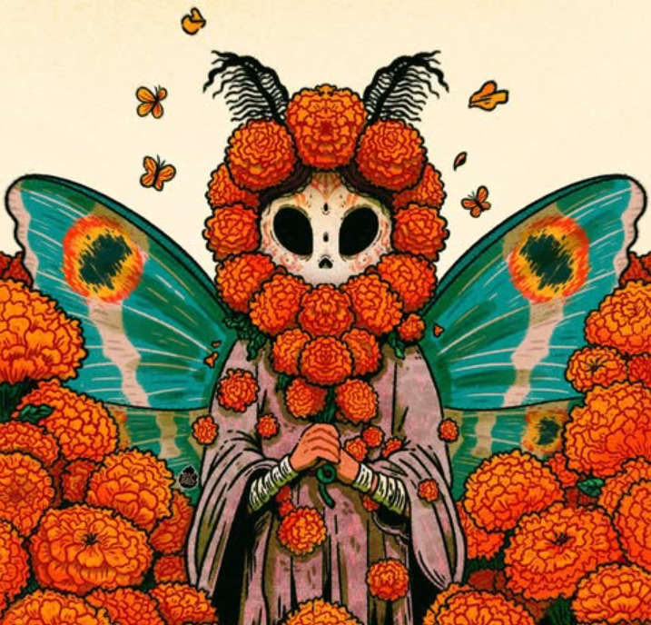

My Favorite Kamloops-Based

Victoria, also known as vixm.art, is a digital artist and sticker maker. She has also recently gotten an apprenticeship as a tattoo artist, and is creating beautiful work. I appreciate her creative and occasionally gothic style.

Kayla, also known as kaylat.art, is a digital artist and printmaker, as well as her career as a tattoo artist at Life Ink Tattoos under the name Hell Kat Tattz. Her style is gorgeous, usually specializing in animals, pop culture, or creepy subjects. Her commitment to bright colors and bold lines always draws attention.

Diego, also Known as dieddo.art, is both a traditional painter and a digital artist. They always work in bright colors, usually focusing on people, animals, and cultural references. He is a bright and vibrant person on and off the page, and is one of the most talented artists I have ever met.